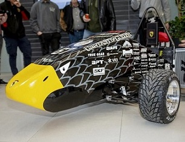

Projects

DON Detection and Sorting

Gryphon Racing Electrical Engineering Team
My name is Marek, I recently graduated from the University of Guelph with a Bachelor of Engineering Honours Program (Co-op) specializing in Systems and Computing. I have a number of technical skills that I regularly leverage to solve complex problems. I enjoy problem solving and always try to innovate.
Through both academia and industry, I have acquired knowledge in many fields including Project Management, Controls, Software Development, Machine Learning, and Research and Development. On top of this, my experience has provided me with the teamwork and leadership skills required to succeed.
I am a problem solver at heart and enjoy applying creative and sound solutions to problems. Let’s innovate and move the world forward together.
Key Courses : Digital Process Control Design, Adv Mechatronic Systems Design, Robotic Systems, Optimization, Real-Time Systems Design, Large-Scale Software Arch Eng, Data Structures, Microcomputer Interfacing, Object Oriented Programming
Drop me a line at marekniew@hotmail.com id like to hear from you.